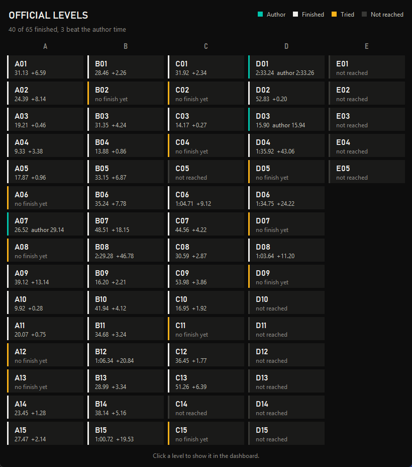
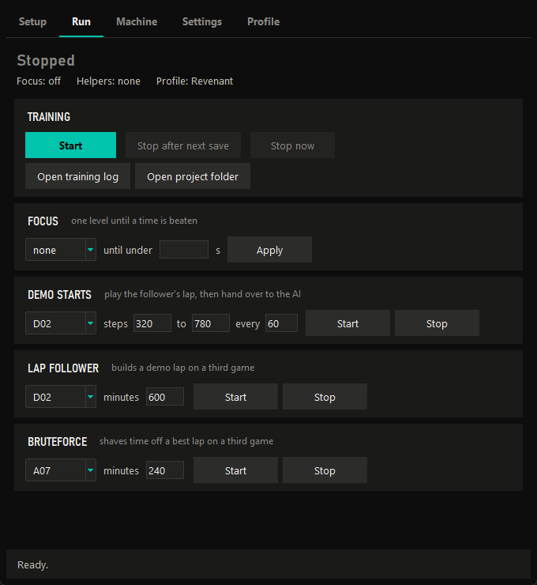

How it learns
It's reinforcement learning: try something, get a score, do more of what scored well. Revenant is built on Linesight and talks to the game through TMInterface.
Twenty times a second the game pauses and Revenant gets a small grey picture of the screen, its speed, which wheels are touching the ground, and where the racing line goes next. It picks one of twelve key combinations. That's all it ever sees or does.
It's rewarded for getting further along the line in less time, and nudged away from walls. At first it drives into the first barrier over and over. A few hours later it's finishing the easy levels, and then it starts shaving off tenths.
-
Games
Two copies of TrackMania run at once through TMLoader and TMInterface, which lets Python pause them, read the car and press keys.
-
Collectors
One per game. They drive with the newest network and send every finished run back.
-
Learner
Keeps recent runs in a replay memory and trains on them on the graphics card. Saves every 5 minutes.
-
Level loop
Works through 56 of the 65 levels in order, with a separate brain for each one.
What it sees, every 50 ms
- A 160×120 greyscale picture of the screen
- Speed, rotation and how fast it's turning
- Each wheel: on the ground, sliding, and what surface
- Gear and engine revs
- Its last 5 key presses
- The next 400 m of the racing line, as 40 points
What it's scored on
| Every metre further along the line | +0.01 |
|---|---|
| Every 50 ms that passes | −0.06 |
| Every 50 ms touching a wall | −0.3 |
| Flipping the steering left to right | −0.02 |
| A good speedslide | +0.01 |
| Passing a real checkpoint | +3 |
So the way to score the most is to finish as fast as possible without scraping walls. Progress can't go past a checkpoint until the game itself counts it, after it learned to cut past a ring on A01.
One level at a time
Revenant aims for the author time on every level. It stays on a level until it has finished it at least 10 times, had its 150k steps (50k once it has author), and then either beaten author or stopped improving for 100k steps. After 600k steps it moves on regardless, and gets another go next time round. The 8 levels with a Gold time over two minutes are left out to save time, and E04 has no usable racing line, so 56 are in the loop.
Every 5 runs it replays one of its own best laps, and every 20 one from another level, so it doesn't forget how it got fast.

When it gets stuck
D02 has a hairpin that Revenant hit the wall on for five hours straight. Practising from the start every time meant it barely got any tries at the corner itself.
- Lap follower
- A spare game builds a lap out of Revenant's own controls, following the record line one 50 ms step at a time and replaying from the start to check every step plays back exactly.
- Demo starts
- Play that lap up to a random point, then hand Revenant the wheel, so it practises the hard part from a good approach. It finished D02 minutes after these were turned on.
- Bruteforce
- Randomly tweaks a few inputs of a finished lap and keeps anything faster. It took A07 from 26.52 to 26.51.

The full write-up, with every setting, is in HOW_IT_WORKS.md